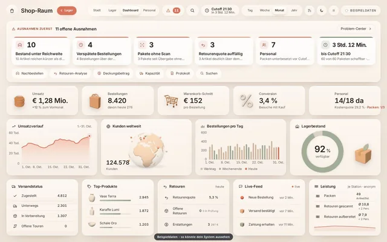
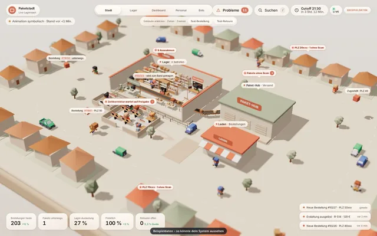
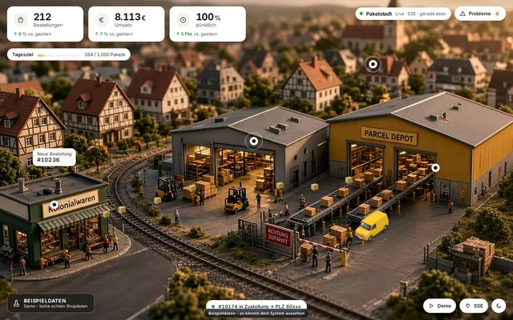
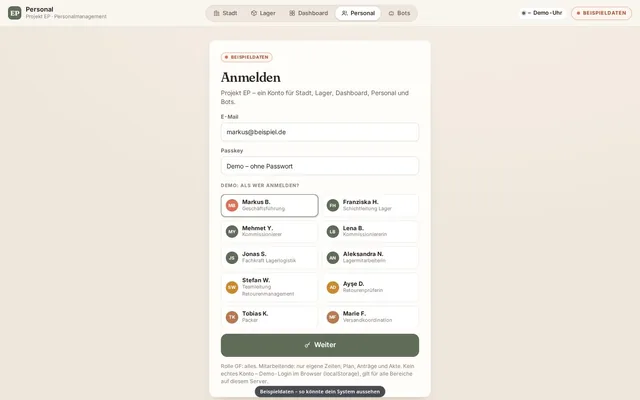
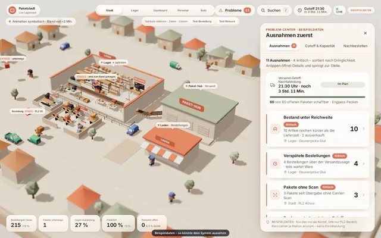
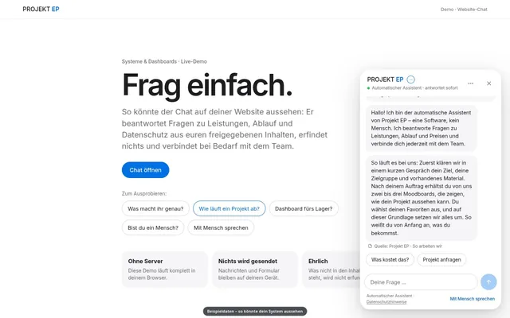
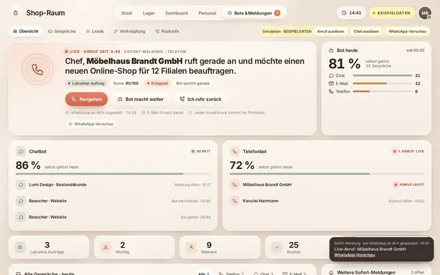

So könnte dein System aussehen.
Live-Demos zum Ausprobieren, direkt im Browser, auch auf dem Handy. Alle Zahlen, Namen und Bestellungen sind erfundene Beispieldaten.

Dashboard · HauptlookShop-RaumUmsatz, Top-Produkte und Versand auf einen Blick, mit den Ausnahmen des Tages ganz oben.
3D · Ablauf livePaketstadtJede Bestellung wandert sichtbar vom Shop über Lager und Packplatz bis zur Haustür.
WarenwirtschaftLager & BeständeBestände, Nachbestellungen und Retouren in einer Ansicht, die Alarm schlägt, bevor Ware fehlt.
PersonalTeam & DienstplanWer ist da, wer fehlt, wo wird gerade gebraucht: Plan, Stempeluhr und Einsatzorte verbunden.
Ausnahmen zuerstProblem-CenterWas heute klemmt, steht oben, mit dem nächsten Schritt direkt daneben.
Website-ChatFrag einfachBeantwortet Fragen zu Leistungen und Ablauf rund um die Uhr und verbindet bei Bedarf mit dem Team.
Bots & Sofort-MeldungenBots im Shop-RaumChatbot und Telefonbot live: Ein Anruf kommt rein, du entscheidest mit einem Tipp, ob du rangehst, der Bot weitermacht oder du zurückrufst.
Gleiche Daten, anderer Look.
Beispieldaten – so könnte dein System aussehen. Keine echten Kunden- oder Personendaten.